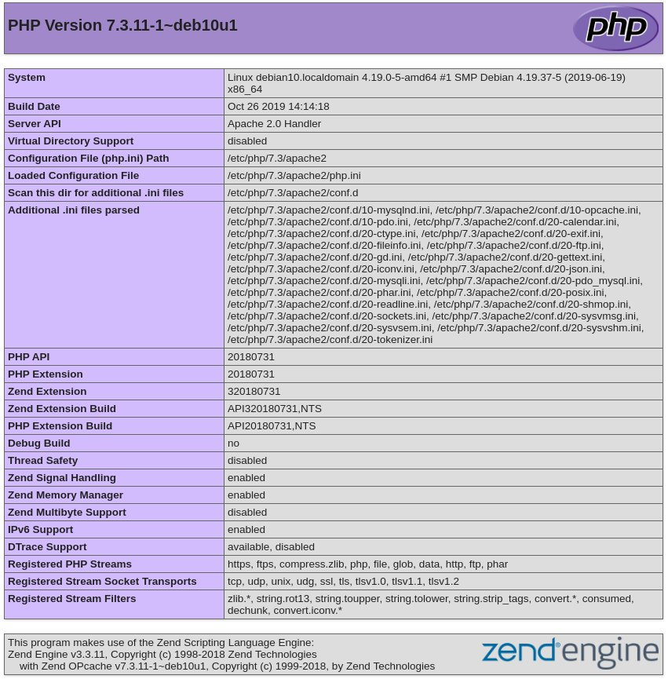

如何在 Debian 10 Linux 上安装 PHP
PHP 是最常用的服务器端编程语言之一。在本指南中，我们将讨论如何在 Debian 10 Buster 上安装 PHP 。我们还将向您展示如何将 PHP 与 Nginx 和 Apache 集成。
Debian 10 附带了 PHP 版本 7.3 ，最流行的 CMS 和框架(如 WordPress ， Magento 和 Laravel) 都支持该版本。
先决条件
为了能够安装软件包，您需要以 root 用户或具有 sudo 特权的用户身份登录。
为 Apache 安装 PHP
如果您使用 Apache 作为 Web 服务器来安装 PHP 和 Apache PHP 模块，请运行以下命令：
sudo apt update
sudo apt install php libapache2-mod-php
安装完成后，请重新启动 Apache 以加载 PHP 模块：
sudo systemctl restart apache2
为 Nginx 安装 PHP
与 Apache 不同， Nginx 不具有处理 PHP 文件的内置支持。您需要使用 PHP FPM(“fastCGI 进程管理器”) 服务来处理 PHP 文件。
通过运行以下命令来安装 PHP 和 PHP FPM 软件包：
sudo apt update
sudo apt install php php-fpm
安装软件包后， PHP FPM 服务将自动启动。
现在，您可以编辑网站的 Nginx 服务器块并添加以下行，以便 Nginx 可以处理 PHP 文件：
server {
# . . . other code
location ~ \.php$ {
include snippets/fastcgi-php.conf;
fastcgi_pass unix:/run/php/php7.3-fpm.sock;
}
}
保存配置文件并重新启动 Nginx 服务，以使新配置生效：
sudo systemctl restart nginx
安装 PHP 扩展
您可以通过安装其他扩展来扩展 PHP 核心功能。 PHP 扩展可以作为软件包提供，并且可以通过键入以下命令轻松安装：
sudo apt install php-[extname]
例如，要安装 MySQL 和 GD 扩展，您需要运行以下命令：
sudo apt install php-mysql php-gd
安装 PHP 扩展时，请不要忘记重新启动 Apache 或 PHP FPM 服务，具体取决于您的设置。
测试 PHP 处理
要测试您的 Web 服务器是否已正确配置以进行 PHP 处理，请使用以下代码在 /var/www/html 目录内创建一个名为 info.php 的新文件：
文件: /var/www/html/info.php
<?php
phpinfo();
保存文件，打开您选择的浏览器并访问 http://your_server_ip/info.php
phpinfo 函数将打印有关 PHP 配置的信息，如下图所示：

结论
我们已经向您展示了如何在 Debian 10 上安装 PHP 以及如何配置 Web 服务器以处理 PHP 文件。